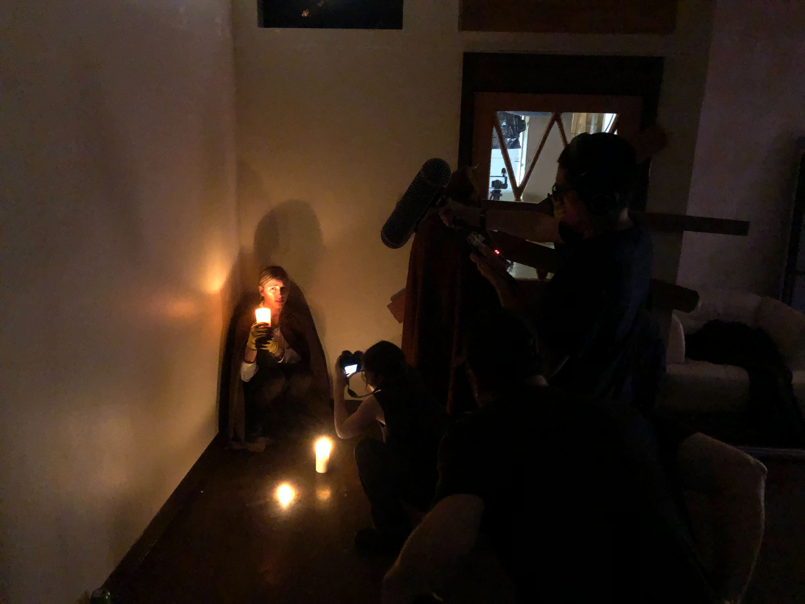
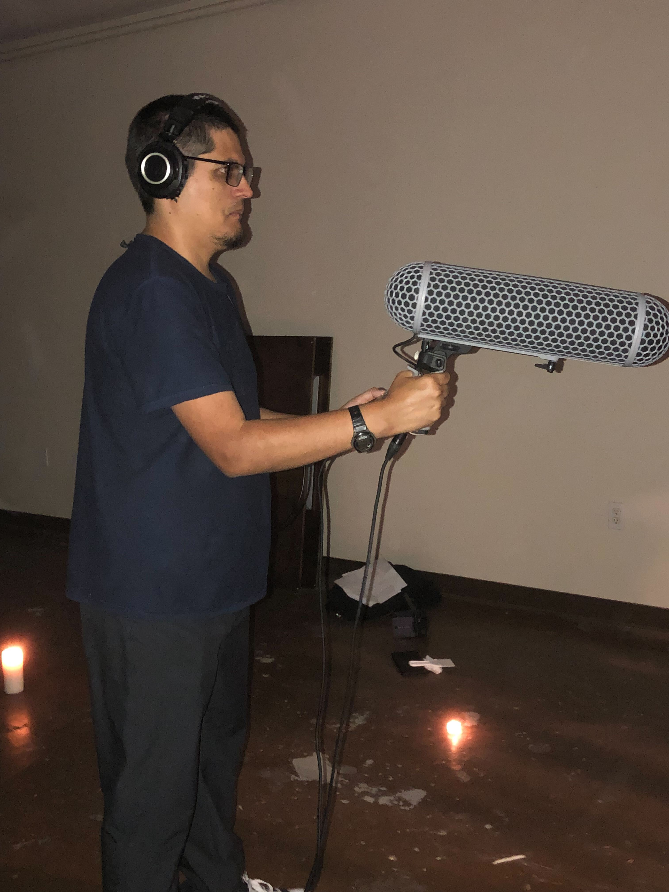
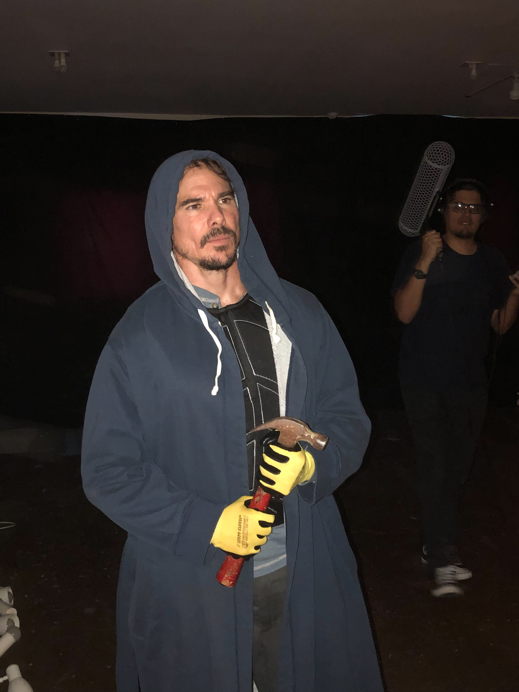

Sean Dog on The Classic Vampire Story
October 2025

The only way to end the hunt is to bait it with her own child. We use the slack cable simply as a visual. Our style is created by our constraints. Not only do we not have the budget to create a monster, we also want to keep it behind the closed door. Like Spielberg with Jaws. The cable is how we leverage the imagination to do all the heavy lifting. And it's free effects. Just like in Jaws, you barely ever see the shark, way cheaper. In fact, that is what inspired it. As that cable reels out we wanted you thinking, "what the hell is going on, this must be one hell of a big vampire." That's where we take whatever you brought into the theater and use it against you. You upset at your boss? Then that's what's on the other end of the cable. Upset about politics? Then that's what's on the other end of the cable.

Another big part of it: we just wanted to shoot a vampire picture that wasn't a joke. When we do these 48 Hour movies, our first tenet is "NO SKITS," and this is where we start. Because that is the strange body snatchers of the 48, the real horror. It's 7 PM Friday, we get assigned a genre and given a prop, the gun goes off, and everyone jumps out of the blocks at a full sprint to make their movie. Somewhere in that sprint, between the genre assignment and the first take, it all becomes Saturday Night Live. Whether you like the movie or not, at least you got a real vampire film.
— SD
FHBP's Sean Dog pontificates on vampires and horror after FHBP's hit Lord of the Undead.
This is a classic vampire story. What makes a vampire story classic is a short list. You get your master, you get his lair, you get your huntress, and you get the thing the huntress has to give up to end it. Four things. That's the whole deal. You can set it in a castle or a cave or a modern Downtown LA apartment building. It doesn't matter. Four pieces.
The lineage is what we added to the story. We chose six generations because we wanted the master to be older than the hunter. You put the hunter on a timeline, the vampire's always been there longer. You can't get out ahead of him. You're always behind. That's what makes him the master.
It's important to guarantee you cannot kill him without losing something you cannot afford to lose. If the solution is cheap, it's not a vampire film.
We also wanted some stakes. The audience should feel that this encounter was the endcap of a very long journey, and that the huntress needed to kill this vamp now or never.

It's a slow release, but the movie eventually reveals the huntress has to sacrifice her own son in order to kill the monster. It's the cost, basically, and her family has been kicking the can down the road for hundreds of years, not paying it.